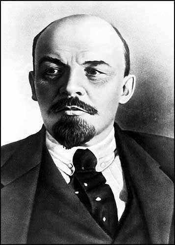

15 LENIN 1870-1924
Vladimir
Ilyich Ulyanov Lenin seorang pemimpin politik yang paling
bertanggung jawab terhadap berdirinya Komunisme di Rusia.
Sebagai penganut Karl Marx yang gigih dan setia, Lenin
meletakkan dasar politik yang hanya bisa dibayangkan oleh
Karl Marx seorang. Begitu cepatnya Lenin menyebar Komunisme
ke seluruh penjuru dunia, dia mesti diakui sebagai salah
seorang yang paling berpengaruh dalam sejarah manusia.
Lahir di Simbirsk (kini ganti jadi Ulyanovsk untuk
menghormatinya) pada tahun 1870. Ayahnya seorang pegawai
negeri yang patuh tetapi kakaknya Alexander adalah seorang
radikal yang dijatuhi hukuman mati karena ambil bagian dalam
komplotan mau bunuh Tsar. Pada umur dua puluh tiga Lenin
sudah menjadi seorang Marxis yang berkobar-kobar. Bulan
Desember 1895 dia ditahan oleh pemerintah Tsar karena
kegiatan revolusionernya dan dijebloskan ke dalam penjara
selama empat belas bulan. Sesudah itu dia dibuang ke
Siberia.
Selama tiga tahun di Siberia (yang tampaknya tidak
digubrisnya sebagai siksaan) dia kawin dengan wanita yang
juga berfaham revolusioner dan menulis buku Pertumbuhan
Kapitalisme di Rusia. Masa pembuangannya di Siberia berakhir
bulan Februari 1900 dan beberapa bulan kemudian Lenin
melakukan perjalanan ke Eropa Barat. Tak kurang dari tujuh
belas tahun lamanya dia berkelana, menjadi seorang mahaguru
revolusioner. Tatkala Partai Buruh Sosial-Demokrat Rusia
dimana Lenin jadi anggota pecah jadi dua bagian, Lenin jadi
pimpinan pecahan yang lebih besar, Bolsheviks.
Perang Dunia I membuka peluang besar buat Lenin. Perang
ini membawa malapetaka baik militer maupun ekonomi bagi
Rusia dan akibatnya menambah ketidakpuasan rakyat kepada
sistem pemerintahan Tsar. Akhirnya pemerintah Tsar ini
digulingkan di bulan Maret tahun 1917 dan untuk sementara
waktu tampaknya Rusia dipimpin oleh sebuah pemerintah
demokratis. Begitu mendengar kejatuhan Tsar, Lenin buru-buru
pulang ke .Rusia dan sesampainya di negeri asalnya ia dengan
cepat dapat melihat dan mengambil kesimpulan bahwa
partai-partai demokratis --walau sudah mendirikan
pemerintahan sementara-- tak punya daya kekuatan cukup dan
kondisi ini sangat baik buat partai Komunis yang punya
pegangan disiplin kuat untuk menguasai keadaan biarpun
anggotanya sedikit. Karena itu Lenin mendorong kaum
Bolshevik melompat kedepan mengguhngkan pemerintahan
sementara dan menggantinya dengan pemerintahan Komunis.
Percobaan pemberontakan di bulan Juli tidak berhasil dan
memaksa Lenin menyembunyikan diri. Percobaan kedua di bulan
Nopember 1917 berhasil dan Lenin menjadi kepala negara
baru.
Selaku kepala pemerintahan, Lenin keras tetapi di lain
pihak dia amat pragmatis. Mula-mula dia ajukan tekanan yang
tak kenal kompromi adanya masa transisi singkat menuju
masyarakat yang ekonominya sepenuhnya berdasar sosialisme.
Ketika ini tidak jalan, dengan luwes Lenin mundur dan
mengambil jalan sistem ekonomi campuran
kapitalis-sosialistis. Ini berjalan di Uni Soviet selama
beberapa tahun.
Di bulan Mei 1922 Lenin sakit keras sehingga antara
serangan sakit itu hingga wafatnya tahun 1924 praktis Lenin
tidak bisa berbuat apa-apa. Begitu wafat, jasadnya dengan
cermat dibalsem dan dipelihara, dibaringkan di musoleum di
Lapangan Merah hingga saat ini.
Ciri penting dari Lenin adalah dia seorang yang cepat
bertindak sehingga dialah orang yang mendirikan pemerintahan
Komunis di Rusia. Dia menganut ajaran Karl Marx dan
menterjemahkannya dalam bentuk tindakan politik praktis yang
nyata. Sejak bulan Nopember 1917 telah terjadi ekspansi
kekuatan Komunis ke seluruh dunia. Kini, sekitar sepertiga
penduduk dunia menganut faham Komunis.
Biarpun arti penting Lenin terletak pada seorang pemimpin
politik praktis, Lenin juga menunjang pengaruhnya lewat
tulisan-tulisan. Pikiran-pikiran Lenin tidaklah bertentangan
dengan Marx tetapi ada perubahan tekanan. Lenin kelewat
terpukau oleh taktik-taktik revolusi dan dia merasa punya
kelebihan khusus dalam urusan ini. Dia tak henti-hentinya
menekankan perlunya penggunaan kekerasan: "Tak ada masalah
apa pun dalam hubungan perjuangan kelas dapat diselesaikan
tanpa kekerasan," adalah ungkapan khasnya. Marx hanya
mengaitkan perlunya kediktatoran proletariat sekali-sekali
saja, tetapi Lenin sudah terlalu tergoda dengan itu.
Misalnya ucapannya: "Diktatur proletariat tak lain dan tak
bukan daripada kekuasaan berdasarkan kekerasan yang tak ada
batasnya, baik batas hukum maupun batas aturan absolut."
Ide Lenin tentang kediktatoran sesungguhnya lebih penting
ketimbang politik ekonominya. Ciri terpokok pemerintahan
Soviet bukanlah di bidang politik ekonominya (banyak
pemerintahan sosialis di banyak negeri) tetapi ciri pokoknya
lebih terletak pada teknik mempertahankan kekuasaan politik
untuk jangka waktu tak terbatas. Terhitung sejak saat Lenin
hidup, tak ada satu pun pemerintah Komunis di mana pun juga
di dunia ini --sekali berdiri dengan kokohnya-- dapat
tergulingkan. Dengan pengawasan yang seksama terhadap semua
lembaga kekuasaan dalam negeri --mass media, bank, gereja,
serikat buruh dan lain-lain-- pemerintahan Komunis tampaknya
sudah mengikis adanya kemungkinan-kemungkinan penggulingan
pemerintahan. Bisa saja ada titik-titik lemah pada
kekuatannya, tetapi tak seorang pun mampu menemukannya.
Jelas bin jelas Komunisme adalah gerakan besar yang punya
arti penting sejarah. Tidaklah jelas benar siapakah yang
bisa dianggap paling berpengaruh dalam gerakan ini, Marx
atau Lenin. Saya beranggapan Marx punya arti lebih pentirig
karena dia mendahului dan mempengaruhi Lenin. Tetapi masih
bisa dibantah anggapan ini karena kemampuan politik praktis
Lenin merupakan faktor yang amat ruwet dalam hal mendirikan
Komunisme di Rusia. Tanpa peranan Lenin, Komunis rasanya
mesti menunggu bertahun-tahun untuk punya kesempatan
memegang kekuasaan dan akan menghadapi perlawanan yang lebih
terorganisir. Karena itu, bukan mustahil tidak bisa
berhasil. Dalam hal memantapkan arti penting Lenin, orang
jangan lupa betapa singkatnya masa kekuasaan dipegangnya.
Juga, berdirinya diktatur proletariat di Uni Soviet lebih
besar berkat Lenin ketimbang penggantinya, Stalin yang lebih
keras.
Sepanjang hidupnya Lenin seorang pekerja keras dan tekun.
Dia seorang yang kenamaan dan jumlah buku yang ditulisnya
tak kurang dari 55 jilid. Dia mengabdikan seluruh hidupnya
untuk tujuan-tujuan revolusi, dan meskipun dia mencintai
keluarganya, dia tak mau pekerjaannya terganggu. Ironisnya,
biar dia menghabiskan sepenuh umurnya dalam percobaan
melenyapkan penindasan, hasil yang dicapainya dari
perjuangan adalah penghancuran semua segi kebebasan
pribadi.
|